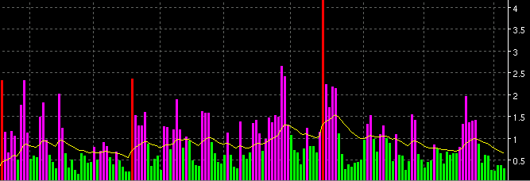

Elder's Market Thermometer - THERM

Parameters:
- Color Above MA - Bar color above MA
- Color Below MA - Bar color below MA
- Color Threshold - Bar color that reaches threshold
- Label - The text that identifies the AD plot
- Line Type - The type of plot to draw
- MA Color - Color of the MA plot
- MA Label - The text that identifies the MA plot
- MA Line Type - The type of MA plot to draw
- MA Period - Period of the MA
- MA Type - Type of MA to use
- Smoothing - Number of smoothing bars to use on THERM values
before MA is applied.
- Smoothing Type - The type of smoothing to use.
- Threshold - Threshold value
Description:
The "Market Thermometer" indicator is described in Dr. Alexander
Elder's book _Come Into My Trading Room_, p.162